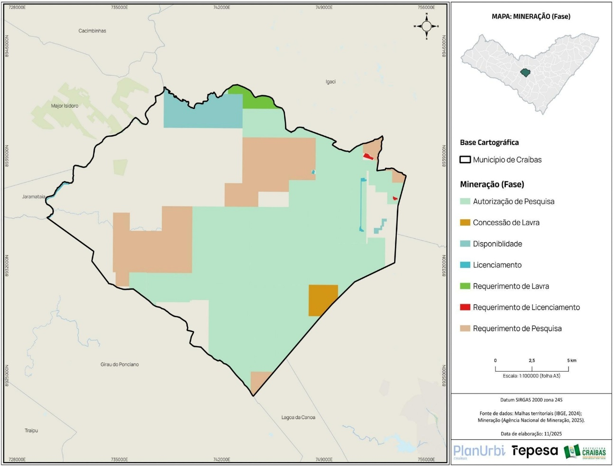
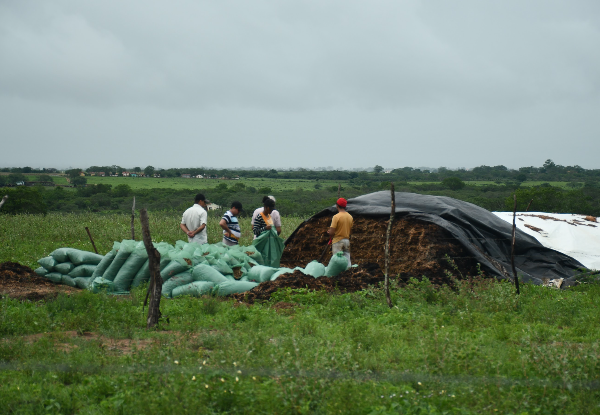
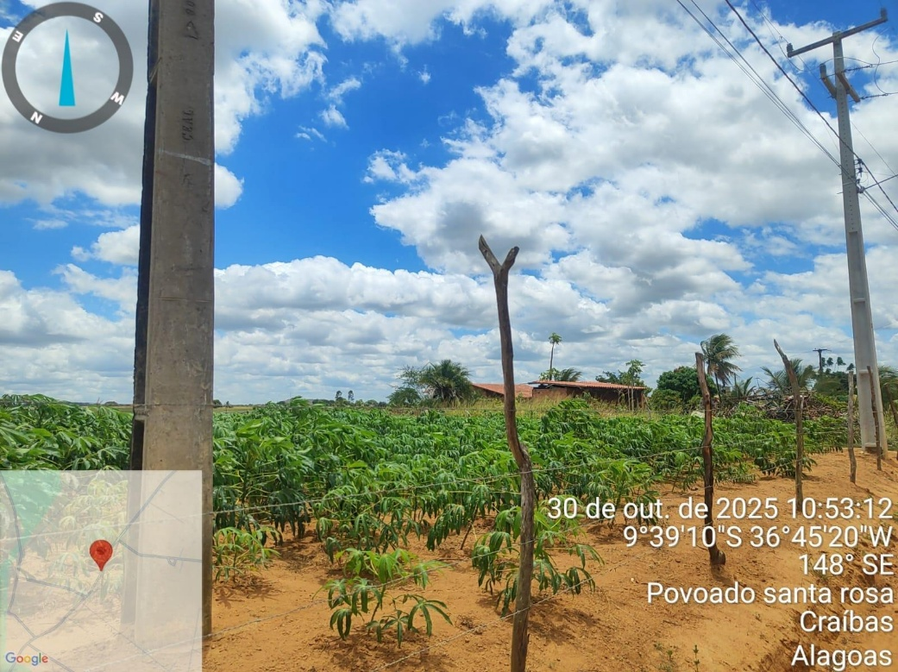

Craíbas, Alagoas — Brasil
Diagnóstico Inteligente · PLANURBI 2026
Indicadores sociais e econômicos, consolidados a partir de dados oficiais do IBGE, DATASUS, MDS, RAIS, PNUD e Tesouro Nacional.
Em 2022, pela 1ª vez, mais gente mora na cidade do que no campo em Craíbas. Aqui você encontra a evolução da população, sua distribuição por sexo, idade e território.
| Ano | População | Variação absoluta | Variação (%) |
|---|---|---|---|
| 1991 | 17.816 | — | — |
| 2000 | 20.789 | +2.973 | +16,7% |
| 2010 | 22.641 | +1.852 | +8,9% |
| 2022 | 25.397 | +2.756 | +12,2% |
| 2024 | 26.115 | +718 | +2,8% |
| 2025* | 26.144 | +29 | +0,1% |
* Estimativa. Fonte: IBGE — Censos Demográficos e estimativas IBGE/FGV Municípios.
O estoque domiciliar cresceu acima da população: a média de moradores por domicílio caiu de 4,1 para 2,6 pessoas — sinal claro de fragmentação dos arranjos familiares e maior pressão sobre a política habitacional.
| Indicador | 1991 | 2022 (est.) |
|---|---|---|
| Total de domicílios | 4.407 | ~9.768 |
| Domicílios urbanos | 1.226 | ~4.941 |
| Domicílios rurais | 3.181 | ~4.827 |
| Média de moradores/domicílio | ~4,1 | ~2,6 |
O PIB municipal saltou de R$ 105,6 milhões em 2010 para R$ 480,8 milhões em 2021, impulsionado pela mineração e pela administração pública. A indústria já responde por 32,7% do Valor Adicionado Bruto.
Clique em cada atividade para conhecer os detalhes da estrutura produtiva craibense.



A receita corrente per capita saltou de R$ 3.102 em 2018 para R$ 8.264 em 2024 (+166%). As despesas empenhadas alcançaram R$ 212,2 milhões em 2024 — sinal claro de ampliação da capacidade fiscal municipal acompanhando o crescimento da arrecadação ligada à mineração.
| Ano | Receita corrente (R$) | Receita per capita (R$) | Despesas empenhadas (R$) |
|---|---|---|---|
| 2018 | 70.225.820 | 3.102 | 62.441.807 |
| 2020 | 95.563.930 | 4.119 | 84.913.751 |
| 2022 | — | — | 119.206.068 |
| 2024 | 212.676.400 | 8.264 | 212.228.581 |
Fonte: Tesouro Nacional · SICONFI 2026.
Craíbas avançou do IDHM 0,204 em 1991 para 0,525 em 2010 — mas permanece abaixo das médias de Alagoas (0,563) e do Brasil (0,659). Quase 6 em cada 10 famílias dependem do Bolsa Família.
Educação Infantil: +95,3% de matrículas em 12 anos (808 → 1.578).
Ensino Fundamental: -19,1% no período (4.824 → 3.903), reflexo da queda da fecundidade e da reorganização da rede.
Ensino Médio: oscilante, sem tendência clara de crescimento (961 → 1.006).
IDEB: ~4,5 anos iniciais e ~4,0 anos finais — ainda abaixo das referências nacionais.
CRAS — Rua Pedro Ramos, s/n, Centro: principal porta de entrada da Proteção Social Básica. Operacionaliza o PAIF e a gestão do CadÚnico, pré-requisito para o acesso a programas como o Bolsa Família.
CREAS — Centro: atende famílias em situação de vulnerabilidade (Proteção Social Especial de Média Complexidade). Atende famílias com direitos violados, executa o PAEFI e medidas socioeducativas em meio aberto.
Rede consolidada de atenção básica, expectativa de vida em forte ascensão (55→75 anos) — mas mortalidade infantil em 26,51 por mil em 2023, acima das médias estadual e nacional.
Os dados disponíveis cobrem doses aplicadas no município entre 2023 e fevereiro de 2026. A análise por tipo de vacina revela imunizantes com maior adesão e frentes que demandam reforço das estratégias de busca ativa.
A queda na cobertura vacinal entre 2017 e 2021 constitui alerta para o sistema municipal — o pico de dengue em 2024 (mais de 600 casos) é um sinal claro da necessidade de fortalecer a vigilância.
Rede pública municipal — atenção básica, urgência, especialidades e vigilância.
A estrutura de saúde de Craíbas está concentrada na atenção básica, o que implica dependência dos centros regionais — especialmente Arapiraca e Palmeira dos Índios — para atendimento de média e alta complexidade.
Para o planejamento territorial, essa condição reforça a importância da distribuição adequada dos equipamentos locais e da articulação entre sede, povoados e eixos de deslocamento, sobretudo considerando a forte presença de população rural (49,4% em 2022).
Você está em Pessoas e economia. Clique em qualquer outro eixo para navegar.